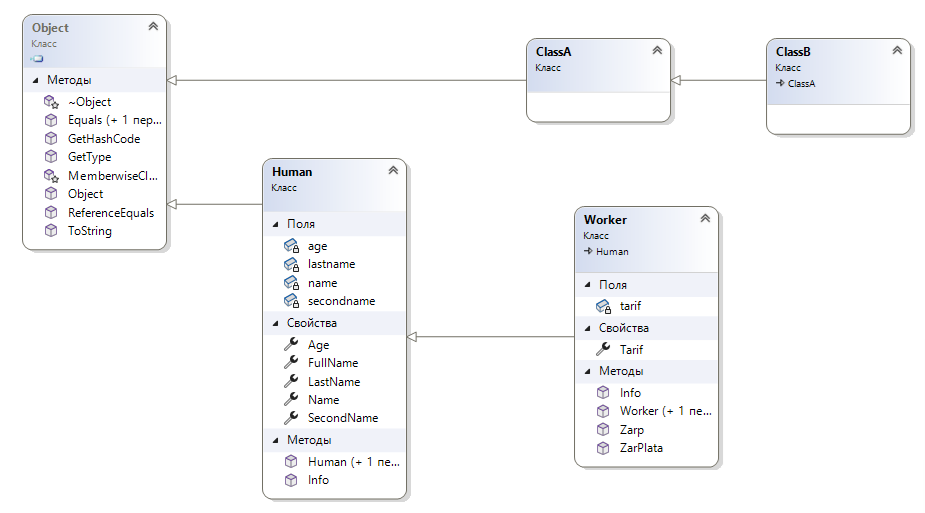
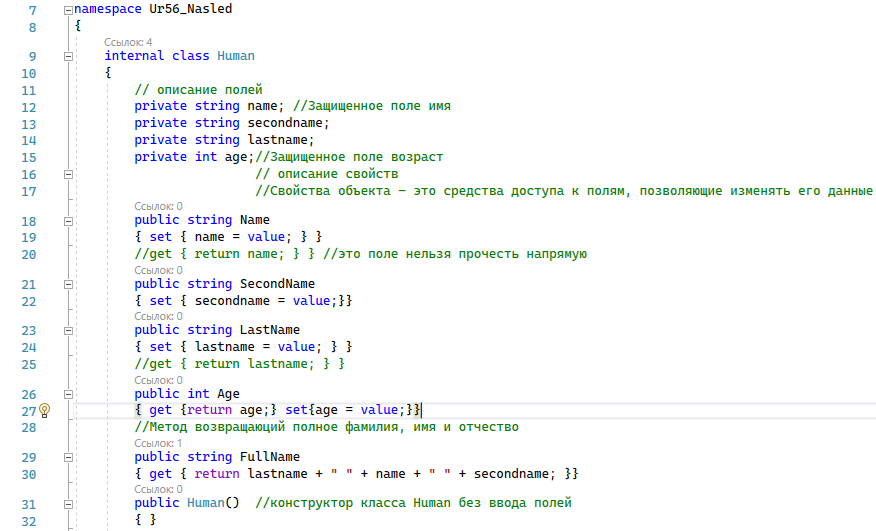
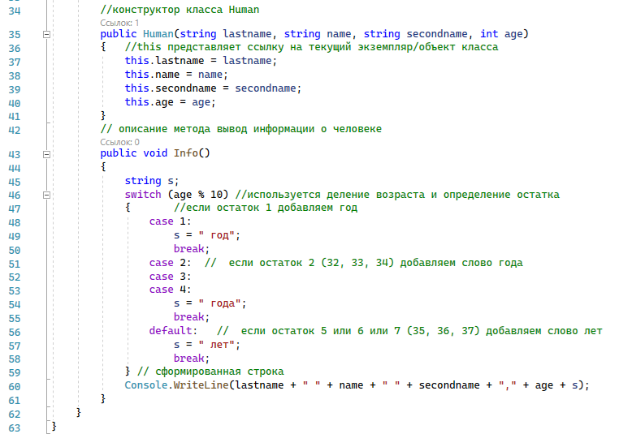

| Тема 3. Пример построения родительского и дочернего класса. Создание конструктора дочернего класса. | ||
| Назад | ||
|
Классы обладают важным свойством: на основе одного класса, который называется родительским, или базовым, можно создавать другие классы, которые называются дочерними, или производными. Этот процесс можно продолжить. Все классы, созданные на основе некоторого класса, называются его потомками. Дочерние классы обладают всеми свойствами и методами родительского класса. Этот факт называется наследованием. Кроме того, можно задавать новые свойства и методы.  Для класса Human создадим дочерний класс Worker.   В класс Worker. добавим поле tarif, которое означает тарифную сетку (в данном случае оплату за один рабочий день), и метод ZarPlata, который вычисляет заработную плату работника, как произведение tarif на количество отработанных дней. Количество отработанных дней (countday) будем вводить в качестве параметра метода. Устанавливать значение tarif будем с помощью свойства Tarif. Получим следующий код:
При создании класса мы записали class Worker: Human //создание дочернего класса Это означает, что класс Worker является дочерним для класса Human. В процедуру Main() запишем следующий код и протестируем работу с полями родительского класса: Worker wrk1 = new Worker();
wrk1.LastName = "Сидоров";
wrk1.Name = "Александр";
wrk1.SecondName = "Михайлович";
wrk1.Age = 42;
wrk1.Tarif = 2000;
Console.WriteLine("Сотрудник {0}, зарплата {1}",
wrk1.FullName, wrk1.ZarPlata(20));
wrk1.Info();
После выполнения кода получим
Мы создали объект с помощью конструктора по умолчанию класса Worker и воспользовались методами и свойствами этого класса. Как видим, все свойства и методы родительского класса Human также доступны в новом классе. Заметим, что первая выведенная строка означает, что мы используем класс Human. Выше, при создании экземпляра дочернего класса мы использовали его конструктор по умолчанию. Создадим конструктор с параметрами public Worker(string lastname, string name, string secondname, int age, int tarif) { this.lastname = lastname; this.name = name; this.secondname = secondname; this.age = age; this.tarif = tarif; } который будет инициализировать все поля при создании экземпляра класса Worker. Учитывая, что при определении конструктора с параметрами у класса Worker конструктор по умолчанию этого класса аннулируется, опишем его явно в виде public Worker() { } Добавим этот конструктор в класс Worker и вернемся к конструктору с параметрами. Конструкторы дочерних классов можно создавать на основе конструкторов родительских классов. Например, рассматриваемый конструктор можно описать так: public Worker(string lastname, string name, string secondname, int age, int tarif) : base(lastname, name, secondname, age) { this.tarif = tarif; } Здесь строка в заголовке метода : base(lastname, name, secondname, age) означает, что используется конструктор базового класса с указанными в скобках параметрами. В теле создаваемого конструктора будет предполагаться присутствие операторов тела указанного конструктора базового класса и будет необходимо записать только недостающие операторы. В данном случае это оператор this.tarif = tarif; Так можно сократить запись. Приведенный код добавим в класс Worker. Процедуру Main() перепишем следующим образом: Worker wrk1 = new Worker();
wrk1.LastName = "Сидоров";
wrk1.Name = "Александр";
wrk1.SecondName = "Михайлович";
wrk1.Age = 42;
wrk1.Tarif = 2000;
Console.WriteLine("Сотрудник {0}, зарплата {1}",
wrk1.FullName, wrk1.ZarPlata(20));
Worker wrk2 = new Worker("Иванов", "Василий", "Петрович",
45, 1500);
wrk2.Info();
Здесь мы объект wrk1 создаем с помощью конструктора без параметров, а объект wrk2 – с помощью конструктора с параметрами. После выполнения получим
|
||
| Конспект подготовлен Бакулиным А. М. 2022 год. | ||